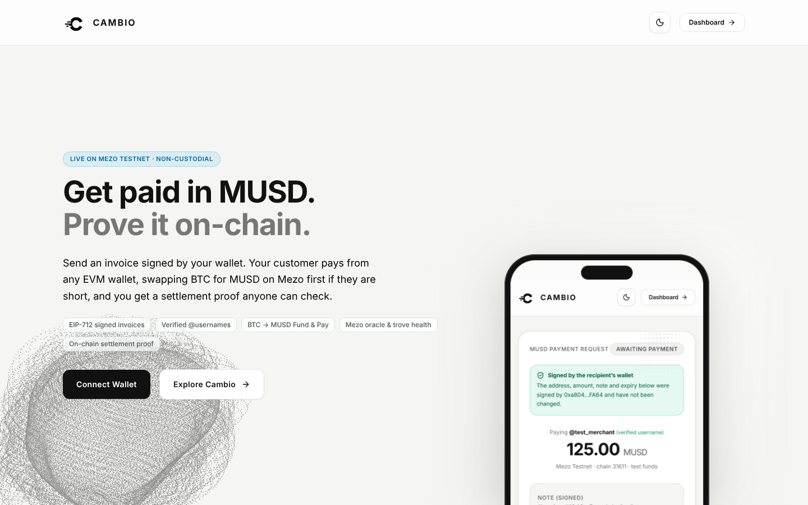
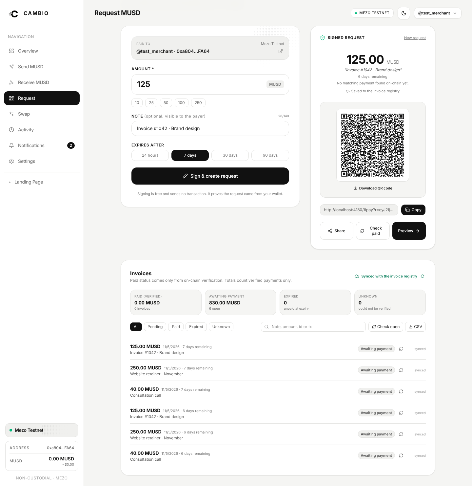
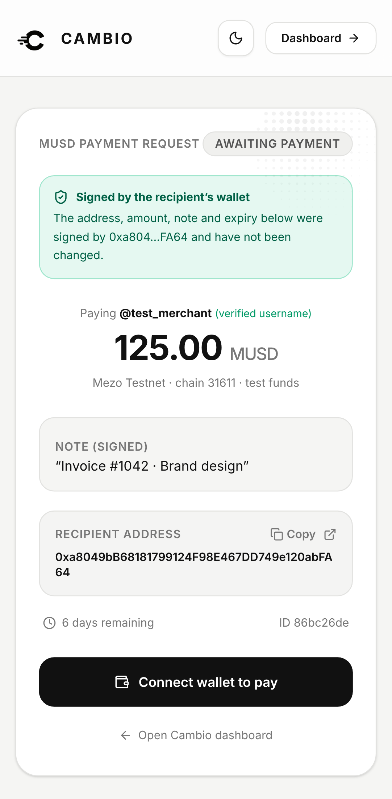
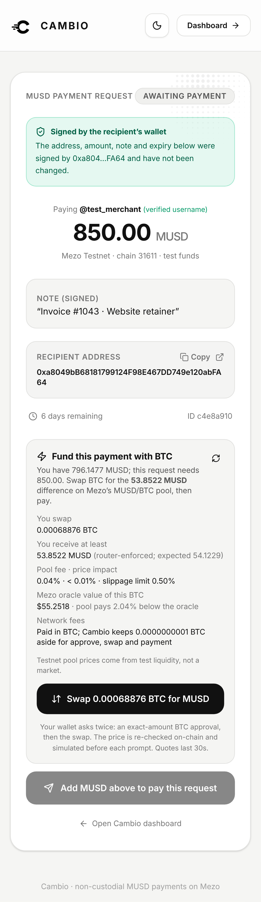
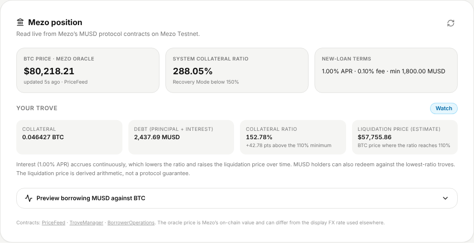

Wallet-signed MUSD invoices any customer can pay, even with only BTC, and settlement that anyone can verify on Mezo.
Lushegs · solo developer
github.com/Lushegs01/cambio · cambio-five.vercel.app · Mezo Testnet (31611)

A pasted address or a payment link can be changed in transit. The payer has no way to know the merchant wrote it.
Merchants check explorers by hand. A payment is easy to miss, mis-attribute or double-count.
A BTC holder who owes a dollar amount must leave the invoice, find a DEX, size a swap and come back.
MUSD is Mezo's Bitcoin-backed dollar. Cambio makes it work as an invoice currency for people who already hold BTC.
They invoice international clients and want a link nobody can edit, a dollar-stable asset, proof for bookkeeping, and no custody risk.
Projects, communities and events whose customers already hold MUSD or BTC on Mezo.
They pay a dollar invoice without leaving it, using Fund & Pay.
These are hypotheses. User research has not started. We make no claim of mass-market or regional demand, and Cambio has no fiat off-ramp.
Transfer event.


The merchant signs an invoice. It's free, and the link is saved to the registry.
The customer opens it: the signature is verified and Cambio checks the invoice is not already paid.
They're 53.85 MUSD short, so Cambio quotes 0.00068876 BTC in, with at least 53.85 MUSD out (router-enforced). The Mezo oracle value is shown alongside.
Exact approval → swap → pay. Each step is its own wallet prompt.
The server re-reads the chain and marks the invoice Paid · verified.
The Fund & Pay screen shows the real @lushegs wallet balance (796.1477 MUSD) against an 850 MUSD test invoice. Read-only capture; nothing was broadcast.
| Mezo contract | Cambio uses it for |
|---|---|
| MUSD | Transfers with a calldata-bound invoice ID; Transfer-event proof |
| Router · PoolFactory · MUSD/BTC pool | Quotes, on-chain fees, reserve-exact Fund & Pay sizing, exact-approval swaps |
| PriceFeed | BTC oracle price; a stale revert shows as stale, never as an off-chain substitute |
| TroveManager | Trove status, getCurrentICR, MCR/CCR, TCR, Recovery Mode |
| BorrowerOperations | Read-only openTrove preview: fee, minimum debt, gas compensation |
| Multicall3 | 17 → 5 RPC requests per refresh |
Addresses come from the official mezo-org/musd deployments and are re-verified by npm run verify:chain. Cambio's ICR math equals a live getCurrentICR to the wei.

| Proof | Transaction | What was checked | Verdict |
|---|---|---|---|
| MUSD transfer 10 MUSD, @solo → @lushegs | 0x8e39d309…5065e block 16390715 | Targets MUSD; transfer calldata; success; matching Transfer event; sender, recipient and amount | PASS |
| BTC → MUSD swap 0.01 BTC → 786.1477 MUSD | 0x4af2b0f0…33f6e block 16382064 | Mezo Router; BTC→MUSD route via PoolFactory; BTC into the pool; MUSD out ≥ router minimum (782.2170) | PASS |
| Signed-invoice settlement | not yet recorded | No transaction with Cambio's CMB2 invoice-ID calldata exists yet. An e2e test proves the wallet is asked to sign exactly that calldata. | PENDING |
npm run verify:evidence → PASS / FAIL / INCONCLUSIVE. Unreadable data is never reported as a pass. Found and fixed along the way: the public testnet RPC returned null for 25–33% of mined receipts.
Usernames, signed invoices, QR codes, settlement proof, Fund & Pay
Cross-device registry, reconciliation, CSV, duplicate-payment alerts, reminders and branded links (to build)
0.25% of verified volume above $2k/month (to test)
A non-custodial transfer pays Cambio nothing. Pro is billed with Cambio's own signed invoice, and the server unlocks it after a verified settlement, so no new contracts are needed. In-payment and routing fees would need an audited contract and are not built.
About $30/month fixed at pilot scale, about $270/month at scale. Roughly 4 Pro merchants cover the pilot and 30 cover scale. Marginal cost per invoice is under a cent.
paying customers, revenue, or completed interviews. We claim none.
on-chain proofs verified (transfer, swap); signed settlement pending
Consent form, interview and usability scripts, and pilot:metrics, which counts only verifiable transactions
| Pilot goal (next 4 weeks) | Target | Measured by |
|---|---|---|
| Consenting testnet merchants | 3–5 | consent forms |
| Verified signed-invoice settlements · distinct payers | ≥ 30 · ≥ 15 | npm run pilot:metrics (chain-derived only) |
| Interviews · usability sessions · willing to pay ≥ $9 | 10 · 5 · ≥ 3 | docs/USER_RESEARCH.md |
React 19 · wagmi · viem ──signs──▶ wallet
│ reads/receipts (retry on "not found")
├──▶ Mezo RPC · Multicall3 · explorer
└──▶ /api (Express, same origin)
├ identity: SIWE usernames
├ invoices: signed-request registry
│ settlement = server re-reads chain
└ Firestore │ SQLite │ memory(dev)
No custom smart contracts. No keys, no custody.
250 unit/integration · 19 Firestore emulator · 20 browser e2e (production build) · 7 live read-only · ESLint 0 warnings · CI on every push. Not audited.
| Wallet send + pasted address | Hosted crypto checkout | Cambio | |
|---|---|---|---|
| Tamper-evident request | No | Hosted page | Merchant's EIP-712 signature, checked in the payer's browser |
| Proof of payment | Screenshot | Provider dashboard | Calldata-bound ID; anyone can verify |
| Pay a dollar invoice holding only BTC | Manual DEX trip | Varies | Fund & Pay on Mezo's MUSD/BTC pool |
| Custody | None | Often custodial | Non-custodial |
| Mezo context | None | MUSD/Mezo support not verified by us | PriceFeed, trove health, borrowing preview |
Comparison based on public product categories, not exhaustive testing. Cambio extends Mezo's own app into payments between people; it does not compete with borrowing or yield.
Signed-settlement proof · redeploy · 3–5 merchant pilot with chain-derived metrics · 10 interviews
Merchant Pro billing via signed invoices · reminders and webhooks · Telegram bot that creates signed invoices
Audited checkout contract (single-use invoices, fees) · optional borrowing route · mainnet only after review
Lushegs, solo developer: product, design and engineering. github.com/Lushegs01
Live: cambio-five.vercel.app · Repo: github.com/Lushegs01/cambio · Track 2: Access & Distribution · Mezo Testnet